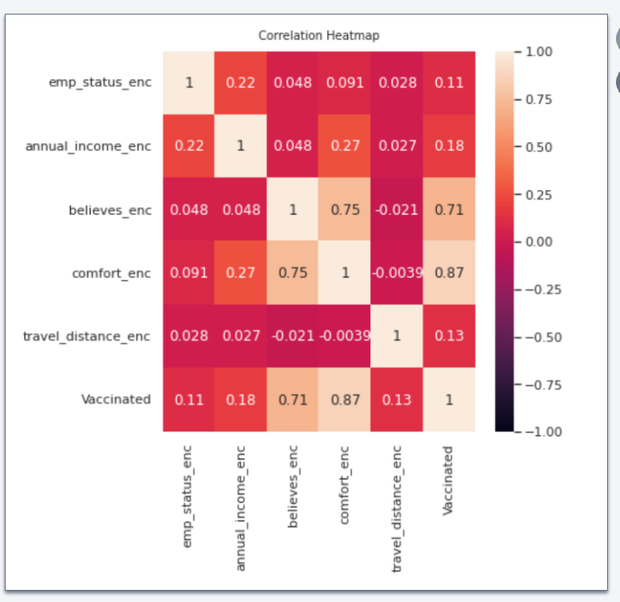
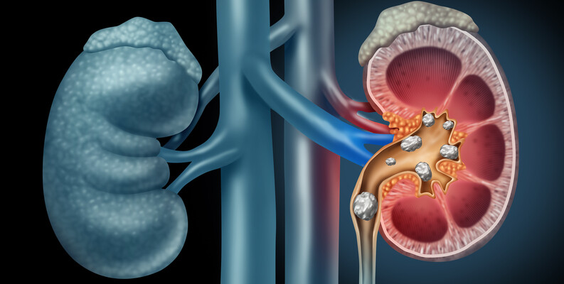
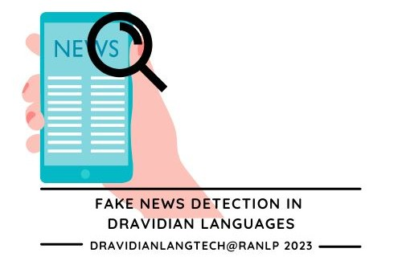
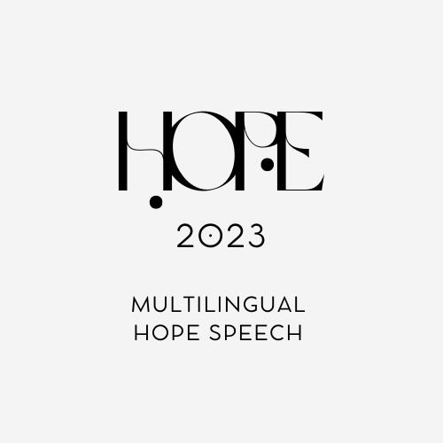

Computer Science Grad Student @ UIC & ML Researcher
Dedicated tech enthusiast excelling in ML and data science, orchestrating innovation through insightful data mastery.
Passionate about technology and innovation
I am currently pursuing my Master's in Computer Science at the University of Illinois Chicago, where I hold a CGPA of 4.0. My primary areas of interest include Machine Learning, Artificial Intelligence, and their practical applications across domains. My portfolio reflects a range of hands-on experience, peer-reviewed publications, and technical projects focused on solving real-world problems with measurable impact. My technical journey began with Natural Language Processing and has progressively expanded to encompass core machine learning and deep learning methodologies. I am currently involved in research exploring advanced neural architectures and am also exploring the emerging area of Agentic AI, with a focus on autonomous systems and task-driven agents. With a solid foundation in both theory and implementation, I am driven to build scalable, efficient, and ethically grounded solutions that address pressing challenges in today's data-driven world.
Professional and academic experience in data science, machine learning, and education
Innovative solutions combining machine learning, data science, and software engineering

This project employs machine learning regression models to analyze demographic, clinical, and genomic data, predicting childhood immunization likelihood among Indian women. It addresses regional variations, including urban, hilly, and rural areas, aiming to enhance vaccine coverage and personalize strategies for vulnerable populations.
Research contributions in machine learning, natural language processing, and healthcare applications

Authors: Varsha Balaji, Shahul Hameed T, Priyadharsini R
Journal of Statistics and Applications - ISSN 2454-7395
View PDFAuthors: Varsha Balaji, Archana JP, Bharathi B
Proceedings of the LT-EDI 2023 – Third Workshop on Language Technology for Equality, Diversity and Inclusion, pages 204–208, Varna, Bulgaria, Sep 7, 2023.
View PDF
Authors: Varsha Balaji, Shahul Hameed T, Bharathi B
Proceedings of the Third Workshop on Speech and Language Technologies for Dravidian Languages
View PDF
Authors: Varsha Balaji, Aishwarya Kannan, Aishwarya Balaji, Bharathi Bhagavath Singh
Proceedings of the Iberian Languages Evaluation Forum (IberLEF 2023)
View PDFGet in touch with me at: varshabalaji04@gmail.com